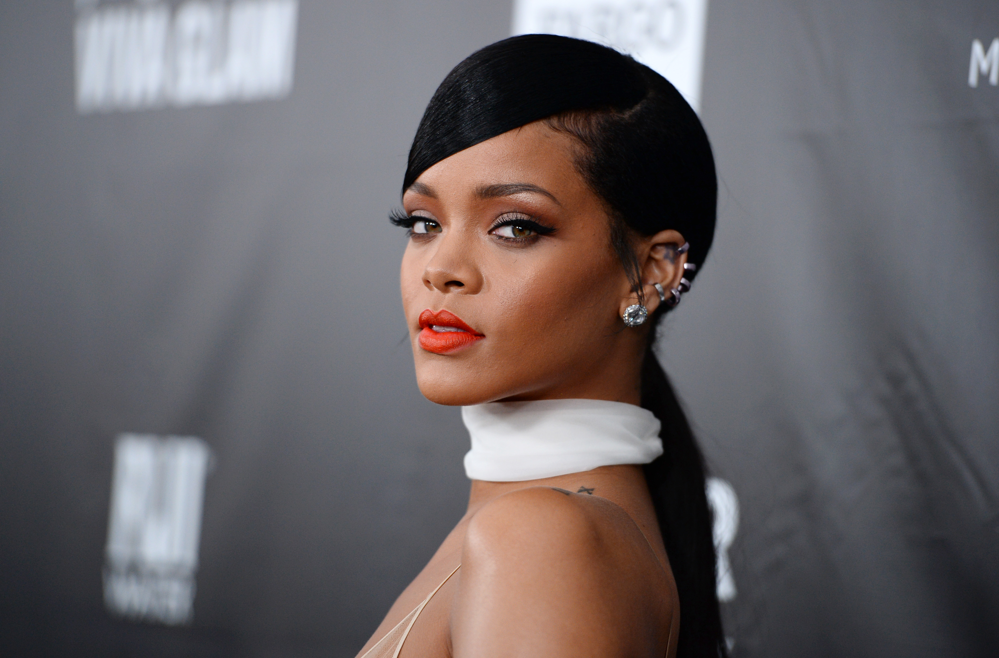
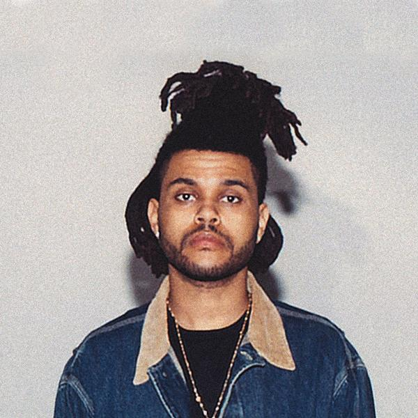
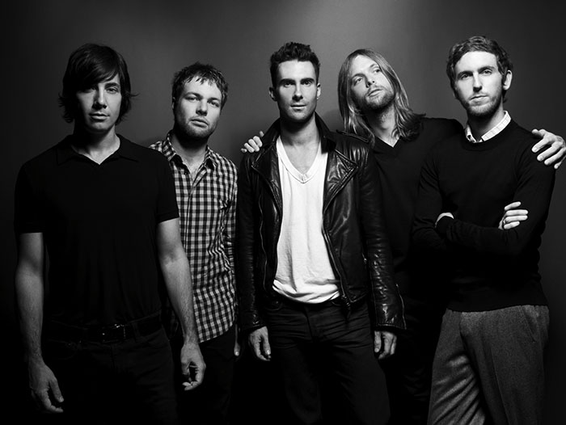
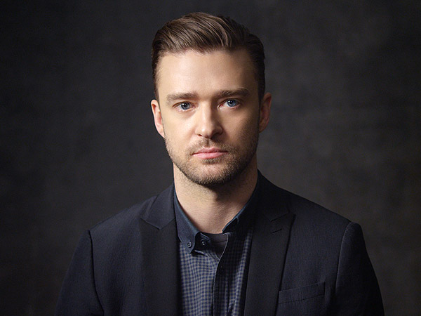

FII PE FAZĂ!
Artiștii cu cei mai mulți fani din lume au anunțat participarea la SunVIBES 2016! Enumerăm mai jos câțiva dintre ei.
-
Rihanna
Cu peste 81,5 milioane de fani pe Facebook, Rihanna este poate cea mai așteptată prezență la festivalul de anul acesta.
The Weeknd
Printre cei 5,5 milioane de fani ai lui de pe Facebook, suntem siguri că sunt și foarte mulți dintre voi!
Maroon 5
Cu aproape 40 de milioane de fani pe Facebook, Maroon 5 este una dintre cele mai iubite formații din lume! Nerăbdător să îi asculți LIVE?
Adele

Cei 65 de milioane de fani de pe Facebook au fost încântați de noul album Adele, album pe care îl va promova și la SunVIBES 2016!
Justin Timberlake
40 de milioane de like-uri are JT pe Facebook! Ești entuziasmat??
Ceilalți participanți sunt: The Neighborhood, Lana del Rey și artiști români precum Andra, Smiley și alții! Vrem să păstrăm surprize de care să te bucuri la fața locului!